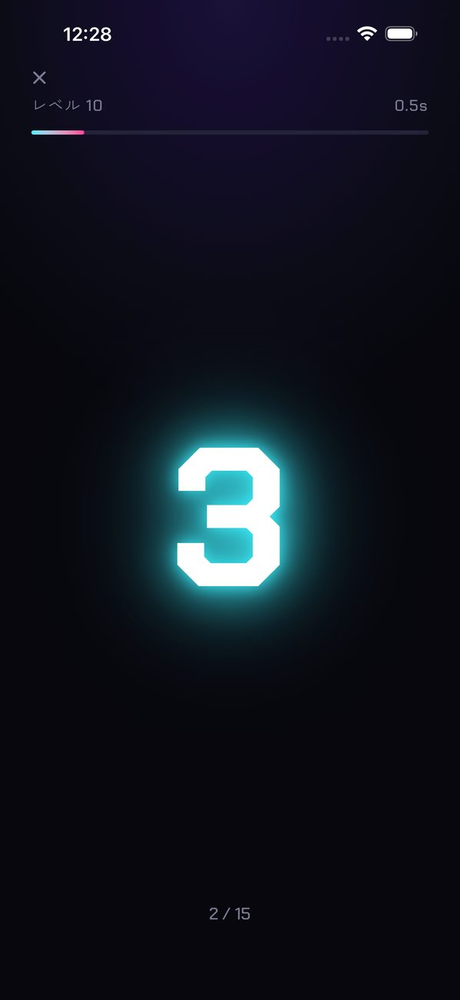
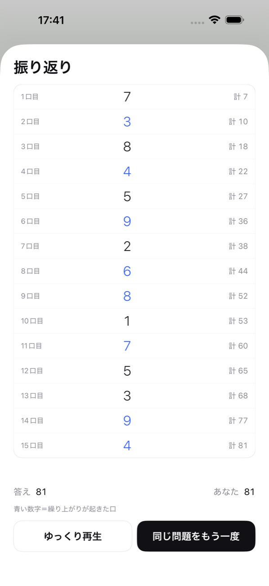
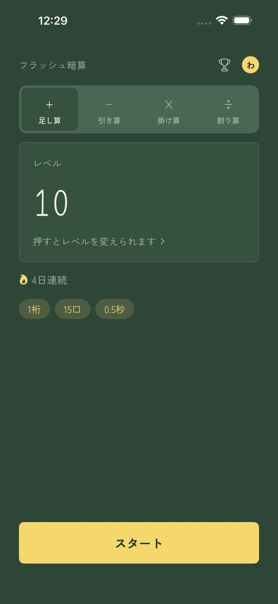

フラッシュ暗算 / SUMFLASH
一瞬ずつ出る数字を、頭の中で足す。
数字が1つずつ、一瞬だけ表示されます。すべて足した合計を答える、そろばん式の暗算トレーニングです。
App Store で見る間違えた理由がわかる「振り返り」
答えたあとに、流れた数字と「その時点の合計」を一覧で見返せます。繰り上がりが起きた口には色が付くので、どこでずれたのかがすぐにわかります。同じ問題をもう一度、またはゆっくり再生して確かめられます。
使い方
- スタートを押す数字が1つずつ表示されます。
- 合計を入力するテンキーで答えを入れて決定。
- 結果と振り返り流れた数字と途中の合計を見返して、どこでずれたかを確かめます。
画面



特徴
- 30段階のレベルから選んで練習（1桁・3口・1秒 〜 3桁・15口・0.5秒）
- 表示の速さは 0.2秒〜5.0秒 で自分でも決められます
- 連続日数をホームに表示。週に1日までなら休んでも連続日数は途切れない
- 決めた時刻にリマインダーでお知らせ（練習した日は鳴らない）
- 数字は出す・消すだけ。アニメーションで読みにくくなりません
- テーマは5つ（ミニマル／和紙／ネオン／黒板／桜）
- 家族でプロフィールを分けて使えます
- 検定モード（1桁10口）で最短の表示間隔を競い、Game Center のランキングに載せられます
- 足し算・引き算（足し引きの混合）・掛け算・割り算をホームのタブで選べます。レベルは演算ごとに30段
- 数字の読み上げ（読上算）
- 記録は端末の中だけに保存（Game Center にサインインしているときは、検定の最高記録だけをランキング用に Apple へ送ります）。ログイン不要
プレミアム
広告なし。月額 ¥300 の自動更新サブスクリプション。iPhone の「設定 › Apple ID › サブスクリプション」からいつでも解約できます。プレミアムで変わるのは広告だけです。ほかの機能はすべて無料で使えます。
広告について
ホーム画面の下と、セットの区切りに広告が表示されます。数字が流れている間、答えを入力している間、振り返りの間には表示しません。プレミアムでは広告は表示されません。